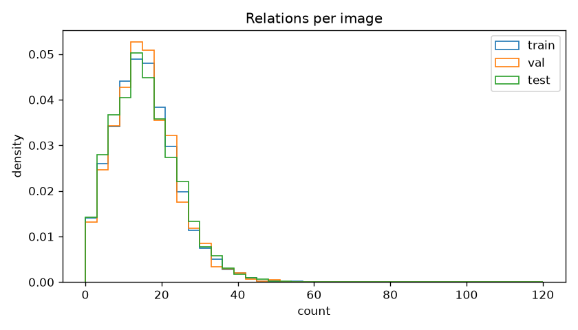
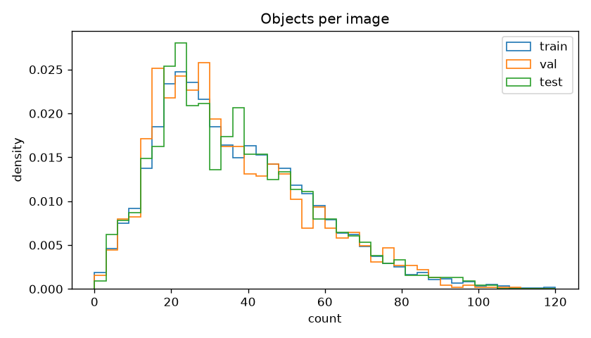

Duyệt dữ liệu VG ∩ COCO
Phase 2 · bước 2.6 · 17/11/2026 · bản 10.000 ảnh · split sha256 c2095127… · tái tạo: python -m scripts.review_vg_coco
1. Kết luận
Dữ liệu dùng được cho Task 1–4. Đồ thị mang thông tin thật về nội dung caption, ba split cân bằng. Trước khi xây đồ thị (bước 2.7) cần chốt 6 quyết định ở mục 7, quan trọng nhất là chữ dùng cho đỉnh khái niệm (D1).
2. Pipeline: từ 108.077 ảnh VG xuống 10.000
Sơ đồ có hiệu ứng luồng. Bấm Play story để đi qua từng chặng; bấm vào một node để làm nổi đường đi. Mở toàn màn hình ↗
Funnel (số ảnh còn lại)
290 ảnh bị bỏ vì hai ảnh VG trỏ cùng một coco_id (cùng ảnh Flickr, lưu hai độ phân giải). Mọi ảnh còn lại đều có trong Karpathy và có đủ 5 caption.
3. Ba split cân bằng
| train | val | test | |
|---|---|---|---|
| Số ảnh / caption | 7.000 / 35.000 | 1.500 / 7.500 | 1.500 / 7.500 |
| Object/ảnh, trung vị (p10–p90) | 32 (14–64) | 31 (13–64) | 33 (13–64) |
| Quan hệ/ảnh, trung vị (p10–p90) | 14 (5–26) | 14 (5–26) | 14 (4–27) |
| Nguồn ảnh | Karpathy train/restval/val | Chỉ Karpathy test | |
Mỗi split được rút có phân tầng theo 4 mức số quan hệ (ranh giới 9 / 14 / 20). Tỉ lệ các tầng lệch nhau tối đa 1,6 điểm %. Test lệch nhẹ hơn vì kho Karpathy test có sẵn phân bố hơi khác.


4. Độ khớp caption ↔ đồ thị
Câu hỏi: đồ thị của một ảnh có nói về đúng những thứ mà caption của ảnh đó nhắc tới không? Nếu không thì dùng đồ thị để xếp hạng lại cũng vô ích.
Sơ đồ dưới đi qua một ví dụ. Mở toàn màn hình ↗
Đọc con số này thế nào
- Chênh gần 10 lần giữa đúng ảnh và ngẫu nhiên: đồ thị chứa thông tin riêng của từng ảnh, nên về nguyên tắc có thể giúp phân biệt ảnh đúng với ảnh sai.
- Vì sao chỉ 40%, không phải 100%: caption có động từ và tính từ (riding, large) mà đồ thị không lưu thành object, và người gán VG không ghi hết mọi thứ.
- Đây không phải recall và không phải cận trên của recall. Chỉ số này so 1 caption với 1 đồ thị, không xếp hạng. Mô hình dùng embedding còn khớp được những cặp mà so chữ bỏ sót (bike ↔ bicycle). Nó chỉ kiểm điều kiện cần: nếu đúng ảnh và ngẫu nhiên khớp ngang nhau thì đồ thị vô ích. Con số gắn với recall sẽ đến từ baseline B4 ở Phase 4: xếp hạng ảnh theo độ trùng từ caption–đồ thị rồi đo R@K.
- Test cho kết quả tương tự (40,5% so với 4,2%), nên không có split nào bị lệch.
60% còn lại là những từ gì
Trong 276.795 từ nội dung của 50.000 caption có 167.338 từ không khớp. Gần như tất cả thuộc những loại mà đồ thị object vốn không lưu:
| Nhóm | Ví dụ (số lần trượt) | Vì sao trượt |
|---|---|---|
| Hành động, tư thế | sitting 4.236 · standing 3.620 · holding 2.068 · riding 1.713 · walking 1.401 | VG chỉ ghi một phần thành vị từ. Tính cả vị từ thì độ khớp chỉ tăng từ 40,8% lên 44,7% (ngẫu nhiên: 4,2% lên 5,0%) |
| Màu, kích thước, tuổi, chất liệu | white 2.392 · large 2.204 · small 1.609 · black · red · young · wooden | Nằm trong attributes.json của VG, chưa tải (xem D6) |
| Từ chỉ cảnh | street 1.153 · city 1.001 · field 869 · room 825 · area 749 | Người gán VG thường ghi object cụ thể chứ không ghi cả cảnh |
| Số nhiều bất quy tắc, từ gần nghĩa | people 1.927 · group 1.720 · person 1.049 · couple 847 · men 627 | Hàm so khớp chỉ bỏ đuôi s, nên men không khớp man. Gộp từ gần nghĩa để ở D5 |
Đồ thị khớp tốt ở phần "có những vật gì", gần như không có thông tin về "vật đang làm gì, màu gì, ở bối cảnh nào". Nó sẽ giúp phân biệt "a man with a dog" với "a man with a car", nhưng không giúp được các truy vấn chỉ khác nhau ở hành động hoặc màu ("a man sitting" và "a man standing", "a red car" và "a white car"). Cần ghi giới hạn này vào phần phân tích thất bại ở Phase 4.
5. Từ vựng
Object: 360.383 trên 10K ảnh
Đuôi dài: 12.592 nhãn, phần lớn hiếm
| Bỏ nhãn xuất hiện ở ít hơn… | Số nhãn bị bỏ | % object bị bỏ |
|---|---|---|
| 2 ảnh | 8.170 | 2,7% |
| 5 ảnh (đề xuất D3) | 10.408 (83%) | 4,8% |
| 10 ảnh | 11.158 | 6,7% |
Đỉnh hub (tỉ lệ ảnh chứa)
Từ gần nghĩa chưa gộp (số ảnh)
Caption
Dài trung vị 10 từ (p10 8, p90 13). Không có câu dưới 5 từ. 665 câu trùng nguyên văn với câu của ảnh khác, 150 câu trong đó thuộc test (ví dụ "a man riding skis down a snow covered slope."). Mỗi truy vấn vẫn chỉ có 1 ảnh đúng, nên các truy vấn này khó hơn một chút. Chỉ ghi nhận, không xử lý.
6. Review thủ công
Đã xem 6 ảnh. Ảnh, caption và đồ thị khớp nhau ở cả 6, không thấy ảnh hỏng hay lệch ánh xạ. Ba phát hiện:
① Lemma synset nhiều khi là từ hiếm hoặc sai nghĩa
48 trong 300 nhãn phổ biến nhất mang tên khác với tên người gán thường dùng. Phần gộp vẫn đúng (couch + sofa, plane + airplane); chỉ có chữ dùng làm tên nhãn là có vấn đề.
Nếu đưa chữ này vào CLIP text encoder thì truy vấn "pants" sẽ khó khớp với đỉnh trouser. Đây là lý do của D1.
② Đồ thị có thể thiếu khái niệm chính; ③ lỗi gõ trong vị từ

Biển STOP bị vẽ graffiti. Có 53 object nhưng chỉ 5 quan hệ, và không có "graffiti" hay "art". Hợp làm ví dụ thất bại ở Phase 4.

Xích lô chở hàng:
bike taxi bị gán lemma jinrikisha.
Ảnh, caption và đồ thị khớp tốt. Lỗi gõ VG gặp ở ảnh khác:
eye if baby, cake in front baby.Phần của bạn
Mở sample.html ↗: 24 ảnh, 8 ảnh mỗi split, mỗi ảnh kèm 5 caption và 10 bộ ba. Nhãn màu đỏ là nhãn không có synset.
7. Sáu quyết định cần chốt trước bước 2.7
Ví dụ trouser hiển thị là "pants", land là "ground". Giữ được phần gộp đúng, bỏ được lemma hiếm hoặc sai nghĩa.
the, white, front, left…) theo một danh sách cố định trong config. Giữ danh từ ghép (street light, wine glass).Các tên này không chỉ vật thể nào.
Bỏ 83% số nhãn nhưng chỉ mất 4,8% object (vị từ: mất 5,1% quan hệ). Đếm trên train để không dùng thông tin test.
Hub vẫn có nghĩa với truy vấn ("a man …").
Nhờ vậy tách riêng được đóng góp của tri thức ngoài.
attributes.json). Bước 2.7 chỉ dùng object và vị từ. Đo B4 xong mới quyết định có thêm hay không.Thêm thì xử lý được truy vấn về màu và kích thước, nhưng phải tải thêm file, thêm một bước chuẩn hoá và đồ thị to hơn. Nếu thêm sau thì sẽ là một ablation riêng ("+ thuộc tính"), không phải làm lại các bước trước.
Xác nhận của bạn
Ô đánh dấu chỉ để bạn tự theo dõi, không được lưu. Hãy trả lời trong chat.